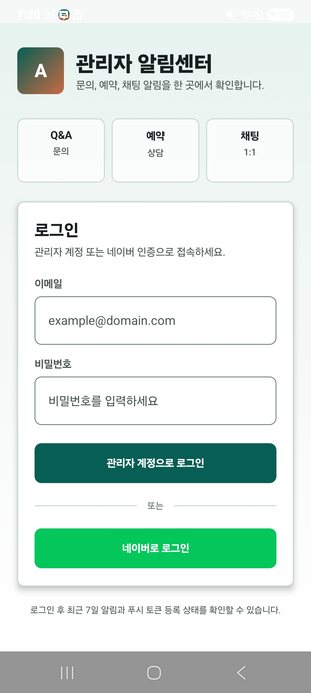
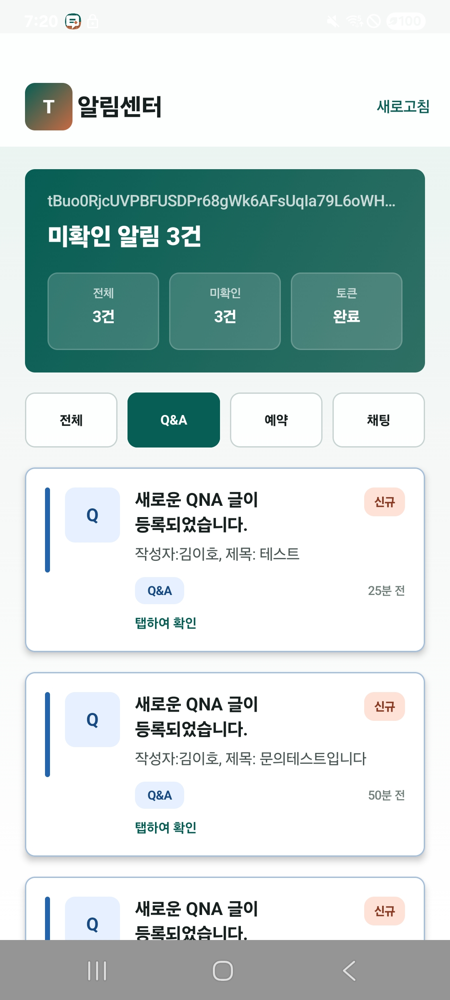
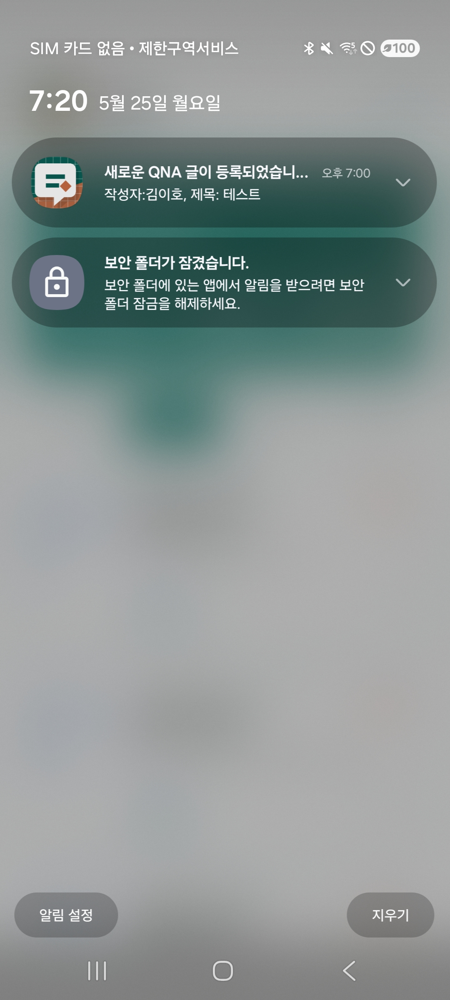

로펌 상담예약/Q&A 관리자 알림 앱
"사용자의 온라인 접수 이벤트를 수신하여 모바일 관리자 앱으로 실시간 푸시를 전송하고 원터치 딥링크 라우팅을 지원하는 Android 푸시 서비스"
Result Screens
zoom_in 이미지를 클릭하면 원본 크기로 크게 볼 수 있습니다.

관리자 모바일 로그인 뷰
보안 JWT 발급 이메일 인증 및 기기 UUID 고유 바인딩 시퀀스 (클릭 시 원본 크기 보기)

수신 알림 목록 및 미확인 필터링 뷰
안 읽은 알림 미확인 뱃지 정렬 및 낙관적 UI 업데이트(Optimistic Update) 읽음 처리 목록 (클릭 시 원본 크기 보기)

FCM Data-only 팝업 수신 및 딥링크 라우팅
FCM 백그라운드 수신 즉각 팝업 노출 및 터치 시 해당 문의글 상세 링크 자동 연동 웹 브라우저 인텐트 라우팅 (클릭 시 원본 크기 보기)
프로젝트 개요
본 프로젝트는 웹 기반 법률 서비스에서 사용자가 남긴 예약 및 Q&A 문의 글을 관리자가 실시간 모바일 팝업 알림으로 신속하게 파악할 수 있도록 구현한 관리자 전용 Android 푸시 앱입니다.
웹사이트에서 신규 상담이나 1:1 대화 이벤트가 발생하면 Spring Boot 백엔드가 Kafka 토픽으로 도메인 이벤트를 스트리밍하고, 별도의 notification-service 워커가 Firebase Cloud Messaging(FCM)을 통해 해당 기기에 푸시 알림을 전송합니다. 모바일 앱은 Kotlin과 Jetpack Compose(Material 3) 기반으로 작성되었으며, MVVM 구조 하에 FCM 토큰 등록, 백그라운드 푸시 표시, 읽음 처리 피드백, 그리고 알림 터치 시 관련 어드민 상세 웹 링크로 라우팅하는 딥링크 흐름을 구현했습니다.
Development Background
lightbulb 배경
실제 법률사무소 운영 시 접수된 문의에 대한 답변 속도는 영업 대응에서 중요한 요소입니다. 이전의 순수 웹 어드민은 관리자가 주기적으로 새로고침(Polling)을 해야 해 응답 지연이 발생했고, 상담 1:1 대화 유입이나 중요 신규 비밀 Q&A를 직관적으로 확인하기 어려운 문제가 있었습니다.
report_problem 주요 과제 및 해결 방식
- FCM 토큰 맵 연동 ➔ 로그인 이후 기기 UUID와 토큰을 매핑 등록하여 소유권 분별.
- 백그라운드 알림 소실 ➔ Data-only Payload FCM을 채택하여 포그라운드/백그라운드 일관 핸들링.
- FCM 토큰 유실 ➔ SharedPreferences 연동 토큰 무효화 재등록 루틴 방어 설계.
- 알림 터치 후 별도 진입 불편 ➔ targetUrl 인텐트 파싱을 통해 원클릭 딥링크 라우팅.
Key Features
관리자 로그인 연동
JWT 기반 일반 로그인 및 외부 네이버 OAuth 콜백 웹뷰 연계 로그인 세션 연계.
FCM 토큰 세션 갱신
FCM 토큰 변경 시 로컬 토큰 만료 처리 및 서버 API 비활성화/재등록 흐름 연동.
Data-only 푸시 수신
FCM 표준 알림 대신 데이터 전용 페이로드를 직접 파싱하여 팝업 헤더 알림 표시 채널 제어.
Optimistic 읽음 반영
목록 탭 시 화면에서 먼저 읽음(미확인 뱃지 제거) 처리하고 비동기로 읽음 API 호출.
딥링크 원터치 라우팅
FCM payload에 targetUrl 값을 실어 보내 알림 터치 시 관련 상세 예약/Q&A 페이지 다이렉트 이동.
안드로이드 13 권한 대응
런타임 알림 표시 권한 POST_NOTIFICATIONS 확인 및 거부 시 안내 런타임 다이얼로그 탑재.
Tech Stack
System Architecture
트랜잭션 커밋 완료 후 도메인 알림 이벤트 생성 ➔ Kafka Topic 발행
Data-only Payload Push 전송
Implementation Details
1) Rationale behind Data-only FCM Message
FCM 표준 메시지(notification 필드가 포함된 페이로드)를 수신하면, 안드로이드 OS는 앱이 백그라운드 상태일 때 onMessageReceived 콜백을 실행하지 않고 시스템 알림 트레이에 단순 팝업을 직접 띄웁니다. 이렇게 되면 앱 내부에서 알림 미확인 카운팅을 하거나 탭 시 targetUrl 값을 커스텀하게 라우팅할 수가 없습니다.
이를 해결하고자 notification 필드 대신 Data-only Payload 중심으로 메시지를 구성했습니다. 안드로이드 앱의 FirebaseMessagingService에서 수신 데이터를 처리하고, NotificationCompat.Builder로 직접 팝업 알림을 빌드하여 foreground/background 상태에서 일관된 라우팅 흐름을 구현했습니다.
2) JWT 인증 연계 FCM 토큰 서버 등록 Kotlin ViewModel
앱은 비로그인 상태에서 토큰을 무작위로 보내지 않고, JWT 로그인 성공 세션이 활성화된 순간에만 기기 UUID와 토큰을 매핑하여 백엔드 API에 등록하도록 설계했습니다. 아래는 MVVM 아키텍처 하에 StateFlow와 Retrofit을 연동해 토큰을 전달하는 코어 ViewModel 구현입니다.
class AdminNotifierViewModel(
private val repository: NotificationRepository,
private val sessionManager: SessionManager
) : ViewModel() {
private val _uiState = MutableStateFlow<UiState>(UiState.Idle)
val uiState: StateFlow<UiState> = _uiState
fun registerFcmToken(fcmToken: String) {
val jwtToken = sessionManager.getAccessToken() ?: return
val deviceId = sessionManager.getDeviceId()
viewModelScope.launch {
_uiState.value = UiState.Loading
val response = repository.registerToken(
bearerToken = "Bearer $jwtToken",
deviceId = deviceId,
tokenValue = fcmToken
)
if (response.isSuccessful) {
sessionManager.saveRegisteredToken(fcmToken)
_uiState.value = UiState.Success
} else {
_uiState.value = UiState.Error("Token registration failed.")
}
}
}
}Troubleshooting
앱 패키지 이름 불일치로 인한 Firebase google-services 빌드 오류
Firebase 콘솔에 등록된 안드로이드 패키지 명칭과 프로젝트 빌드 그래들(`build.gradle.kts`)의 applicationId가 불일치하여 `google-services.json` 컴파일 로드 도중 앱 실행 즉시 크래시 발생.
Firebase 콘솔에 동일 패키지명 앱을 재생성 및 재등록하고 그래들 내의 빌드 아이덴티티와 동기화. 빌드 오류 추적 가이드를 만들어 인스펙션 프로세스 문서화 완료.
기기 상태 변화에 따른 FCM 토큰 실시간 갱신 누락
모바일 기기 네트워크 변화, 앱 강제 캐시 제거, FCM 내부 주기에 따라 토큰이 새로 발급(갱신)되었으나 서버의 이전 기기 토큰이 유지되어 푸시 전송 시 지속 누락(Bad Token)되는 문제 발생.
onNewToken 콜백 실행 시 SharedPreferences에 저장된 기존 토큰과 대조하여 즉각 초기화하고, 로그인 상태가 충족되어 있을 시 서버 API를 즉시 동기화 호출하도록 옵저버 리스너 설계.
Performance & Security
Kafka 비동기 큐 처리 방식으로 사용자 웹 API 처리 흐름과 알림 전송 부하를 분리.
알림 라우팅에 필요한 핵심 JSON 메타데이터만 포함하여 오버헤드와 수신 지연을 줄임.
로그아웃 시 서버에 저장된 해당 관리자의 기기 토큰 상태를 폐기하여 오배송 가능성을 낮춤.
Links
Retrospective
모바일 앱 개발에서는 사전에 정의한 화면/상태 관리 규칙과 API 연동 기준을 바탕으로, 반복 UI 구현과 연결 코드 작성에 AI 도구를 보조적으로 활용했습니다.
이를 통해 백엔드(Spring, Kafka)와 모바일 기기(Kotlin) 간의 실시간 이벤트 및 데이터 동기화 흐름을 파악하고, FCM 단말 토큰의 생명주기 및 targetUrl을 활용한 앱 내부 인텐트 라우팅 흐름을 정리할 수 있었습니다. MVVM 아키텍처에서 뷰 모델과 UI 상태 흐름이 클라이언트와 백엔드 서버 사이에서 어떻게 연계되는지 학습한 경험이었습니다.